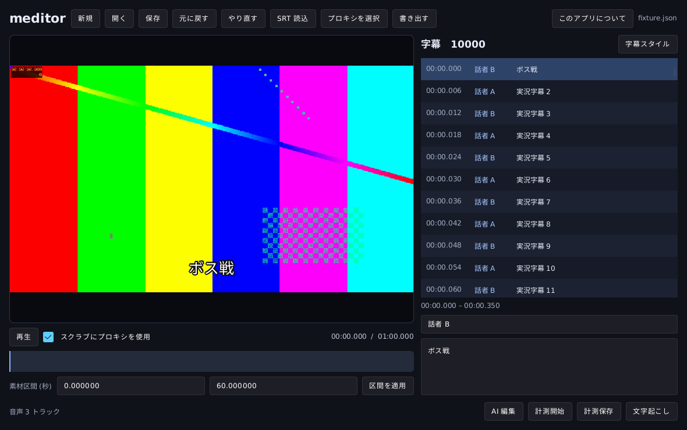
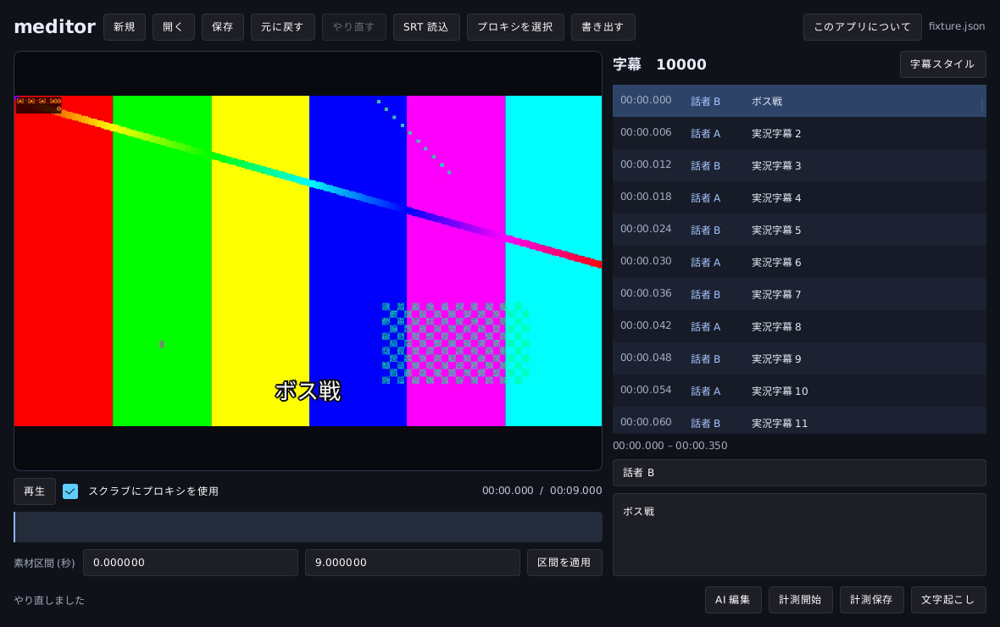

Undo の後の新しい編集で通常の Redo の候補を消す
素材区間を0〜9秒に変更する
- 合成プロジェクトを開く
- 開始に「0」、終了に「9」を入力して「区間を適用」を押す
操作直後の画面原寸で開く ↗ なぜ成功か
すべての確認点が期待値と一致しました。 入力した 0〜9 秒が素材区間に反映されれば、続く Undo で取り消す変更が作成されている。
確認点 期待値 実際の値 結果 素材区間 0.000000 – 9.000000 秒 0.000000 – 9.000000 秒 成功 区間変更を元に戻す
- 前提
- 制作者が以前のクリップ変更を元に戻し、Redo ができる
- ツールバーの「元に戻す」を押す
操作直後の画面原寸で開く ↗ なぜ成功か
すべての確認点が期待値と一致しました。 区間が元の 0〜60 秒に戻り、Redo が有効なら、取り消した区間変更をまだ再適用できる。
確認点 期待値 実際の値 結果 素材区間 0.000000 – 60.000000 秒 0.000000 – 60.000000 秒 成功 やり直すボタン 有効 有効 成功 別の編集として字幕本文を変更する
- もし
- 制作者が代わりに字幕を修正し、その変更を適用する
- ならば
- 字幕の修正が現在の編集状態に反映される
- かつ
- 通常の Redo は利用できなくなる
- 字幕一覧の先頭行を選び、本文を「ボス戦」に書き換える
操作直後の画面原寸で開く ↗ なぜ成功か
すべての確認点が期待値と一致しました。 字幕に「ボス戦」が反映され、Redo が無効なら、新しい字幕編集を適用した時点で以前の区間変更の Redo 候補が消えている。
確認点 期待値 実際の値 結果 字幕一覧の本文 ボス戦 ボス戦 成功 やり直すボタン 無効 無効 成功
保存後に開き直したプロジェクトで Undo と Redo を使う
字幕と素材区間を順に変更する
- 前提
- 制作者が字幕本文を「ボス戦」に編集し、続けてクリップの区間を変更した
- 合成プロジェクトを開く
- 字幕一覧の先頭行を選び、本文を「ボス戦」に書き換える
- 開始に「0」、終了に「9」を入力して「区間を適用」を押す
操作直後の画面原寸で開く ↗ なぜ成功か
すべての確認点が期待値と一致しました。 字幕が「ボス戦」で区間が 0〜9 秒なら、字幕編集と区間変更の両方が反映されている。
確認点 期待値 実際の値 結果 字幕一覧の本文 ボス戦 ボス戦 成功 素材区間 0.000000 – 9.000000 秒 0.000000 – 9.000000 秒 成功 区間変更だけを元に戻して保存する
- かつ
- 区間変更だけを元に戻してプロジェクトを保存した
- ツールバーの「元に戻す」を押す
- ツールバーの「保存」を押す
操作直後の画面原寸で開く ↗ 
なぜ成功か
すべての確認点が期待値と一致しました。 区間だけが元の 0〜60 秒に戻り、保存完了が表示されれば、その状態で保存できた。
確認点 期待値 実際の値 結果 素材区間 0.000000 – 60.000000 秒 0.000000 – 60.000000 秒 成功 保存結果 プロジェクトを保存しました プロジェクトを保存しました 成功 保存したプロジェクトを開き直す
- もし
- 制作者が保存したプロジェクトを開き直す
- ならば
- 字幕は「ボス戦」で、クリップの区間は Undo 後の値である
- かつ
- 「元に戻す」と「やり直す」の両方を使える
- 直前に保存した fixture.json を再度開く
操作直後の画面原寸で開く ↗ 
なぜ成功か
すべての確認点が期待値と一致しました。 字幕が「ボス戦」のままで区間が 0〜60 秒に戻っており、Undo と Redo の両方が有効なら、編集内容と両方向の履歴を復元できている。
確認点 期待値 実際の値 結果 字幕一覧の本文 ボス戦 ボス戦 成功 素材区間 0.000000 – 60.000000 秒 0.000000 – 60.000000 秒 成功 元に戻すボタン 有効 有効 成功 やり直すボタン 有効 有効 成功 区間変更をやり直す
- もし
- 制作者が「やり直す」を押す
- ならば
- 保存前に元に戻した区間変更が適用される
- ツールバーの「やり直す」を押す
操作直後の画面原寸で開く ↗ 
なぜ成功か
すべての確認点が期待値と一致しました。 区間が再び 0〜9 秒になれば、保存前に取り消した区間変更を開き直したあとに再適用できている。
確認点 期待値 実際の値 結果 素材区間 0.000000 – 9.000000 秒 0.000000 – 9.000000 秒 成功